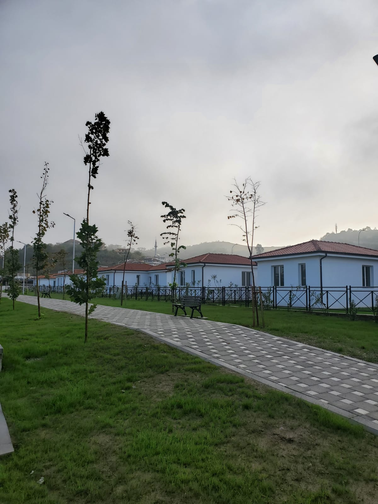

Ndërtim CivilZhvillime të reja në projektet civile
Rafin Company vijon punën në objekte civile me fokus cilësinë, sigurinë dhe koordinimin teknik.
Lexo më shumë"RAFIN COMPANY"
Was founded with the mission to develop a new standard in the Albanian market. Our desire and passion for professionalism made it possible to achieve our goals. We have established long-standing relationships with international partners in different areas of construction and create complex infrastructure projects with sophisticated technical and quality standards. Our contacts have been established nationwide and across the region to stay close to innovative methods and high standards in this industry.
Established in Tirana, "Rafin Company" has created a development strategy focused on meeting market requirements and offering high-quality solutions to clients. We specialize in projects such as: civil construction, public construction, machinery trade, technology, water supply infrastructure, and high-quality materials from leading brands, etc.

Integrated expertise
We support infrastructure delivery from planning through execution with disciplined engineering, coordinated field operations, and dependable project control.
We take our time on initial planning before any construction begins, to balance all the financial and efficiency issues beforehand...
Explore service 02We have a long list of professional contractors, whom our engineers and architects enjoy to work with on a majority of our projects!
Explore service 03Our customers love the pace/quality tempo that we show during each of the principal construction processes!
Explore service 04Construction project management is essential. We're using the most time and iterations efficient life cycles methods for that.
Explore service 05Oftentimes physical and functional essence of any construction project needs to be represented digitally, in a 3D model format.
Explore service 06If a project is not too complex, we may hire a designer-builder type of contractor, to make the longevity of the construction shorter.
Explore serviceShikoni mundesite aktuale te karrieres dhe hapni cdo rol per detaje te plota perpara aplikimit.
RAFIN COMPANY
Zhvillimet më të fundit nga projektet, infrastruktura dhe aktivitetet tona në terren.